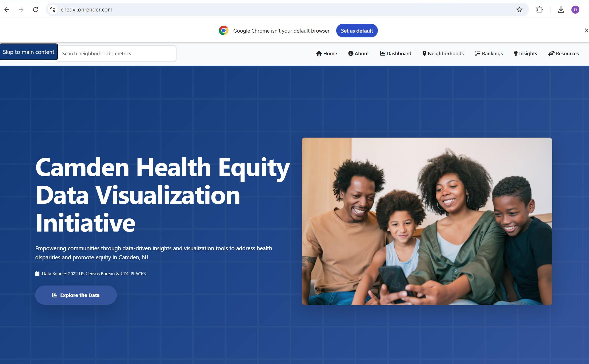

Research
ResearchAI readiness is more than access to tools
Organizations need the data, governance, workforce capability, infrastructure, and leadership to turn experimentation into value.
Explore the research →I help leaders and teams turn AI ambition into useful value—identifying AI use cases, redesigning work, developing capability, and building solutions that produce ROI for you.
Scroll to exploreWhether you need to decide what to change, make something work, develop your team, or convene a conversation, the starting point is the problem in front of you.
Find the right problem and use case, redesign the work around it, and plan for adoption.
Explore transformation →02Move from an important question to a usable data product, tool, or platform.
Explore building →03Build AI literacy, practical judgment, and confidence through tailored learning.
Explore training →04Bring a grounded perspective on AI, work, and human capability to your audience.
Explore speaking →I conceived and led CHEDVI, a Camden health-equity data platform that lets visitors explore neighborhood patterns through maps, profiles, rankings, and an interactive dashboard.
See the CHEDVI case study →
My work connects rigorous inquiry with practical communication for leaders, teams, and communities.
Co-authored research and a 2025 AAAS presentation on state-level AI readiness.
See the research →Algorithms · 2026A peer-reviewed systematic review of 76 studies and the challenges of clinical adoption.
Read about the paper →Book & speakingAuthor of an introductory AI book and a speaker on ethical AI at the Rutgers–Camden Business Symposium.
Explore speaking →Long-form explanations and practical questions for leaders, teams, and people navigating AI-driven change.

Better mental models for better judgment.
Read article →
Start with the work, then the tool.
Explore framework →Connect inquiry to action.
Explore research →A practical sequence for finding real value: define the problem, understand the process, specify the use case, develop skills, choose the technology, and create a culture that can sustain the change.
Explore the framework →Three practical routes into the questions leaders ask when moving from interest in AI to meaningful change.
Frame the outcome before choosing technology.
Explore the framework →Connect a specific application to a real process.
Examine use cases →Move from analysis to a working platform.
View technical work →My work includes developing technical solutions, not just advising on what others should build.
A live health-equity platform I conceived and led, built to make neighborhood patterns easier to explore.
View project →
A framework for understanding the foundations of meaningful AI adoption.
Explore work →Transparency, trust, and implementation in high-stakes contexts.
Explore research →Research and practice meet in questions of readiness, equity, learning, and institutional change.
ResearchOrganizations need the data, governance, workforce capability, infrastructure, and leadership to turn experimentation into value.
Explore the research → Working thesis
Working thesisAutomation can make the wrong process faster. Transformation asks what should change, how, and for whom.
Read the framework →Find my talks, workshops, and upcoming appearances here. Confirmed dates and details will be shared as they are announced.
“Most organizations are adopting AI without transforming. The work begins with the problem—not the tool.”
Shorter observations on the technologies, skills, and institutions shaping the next phase of AI.
What should remain a human decision when capability is delegated to AI?
How do teams gain the confidence to use AI critically, not just frequently?
When should an idea become a reusable product rather than another pilot?
These are the questions I return to across strategy, research, and building.
What are we trying to solve, improve, or make possible?
Do people and institutions understand, trust, and sustain the change?
I work where AI meets business value, organizations, solutions, and human capability. My work intersects clear thinking, technical implementation, and the realities of AI adoption.
More about me →